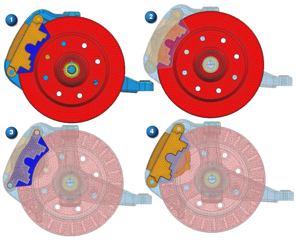

由于高级仿真使用 NX 装配体系结构，因此可以像在装配应用模块中一样，独立于显示部件设置工作部件。在“高级仿真”中，此功能被称为关联有限元模型。
在使用较大或复杂的 CAE 模型时，关联有限元建模比每次更改显示部件更省时，资源消耗也更少。
对装配 FEM 的组件进行网格划分时，关联中的 FE 建模使您可以快速比较组件连接所在的相对网格拓扑。这样，您可以使用网格控件、手工编辑等编辑网格，从而确保在组件 FEM 之间建立高质量连接并改进模型。
在显示部件的关联中更改工作部件时，菜单、工具条及快捷菜单会变化以反映可用于该部件的命令。
|

|
关联有限元模型有助于支持许多工作流，具体包括：
在显示装配 FEM 的情况下，将组件 FEM 设为工作部件，以创建或编辑网格，清理或修改多边形几何体，或者修改物理属性和材料属性。
在显示装配 FEM 的情况下，将子装配 FEM 设为工作部件，以解决标签冲突或编辑连接网格。
在显示仿真的情况下，将组件 FEM 设为工作部件，以在施加载荷和边界条件的关联中修改网格或多边形几何体。
在显示 FEM 的情况下，将理想化部件设为工作部件，以在网格关联中创建或修改几何体。
当工作部件与显示部件不同时，软件会以多种方式加以指示：
工作部件和显示部件在 NX 窗口的标题栏中指出。
工作部件将在仿真导航器中高亮显示为蓝色，并会在状态列中显示。非工作部件节点在仿真导航器中灰显。
在图形窗口中，非工作部件透明显示。